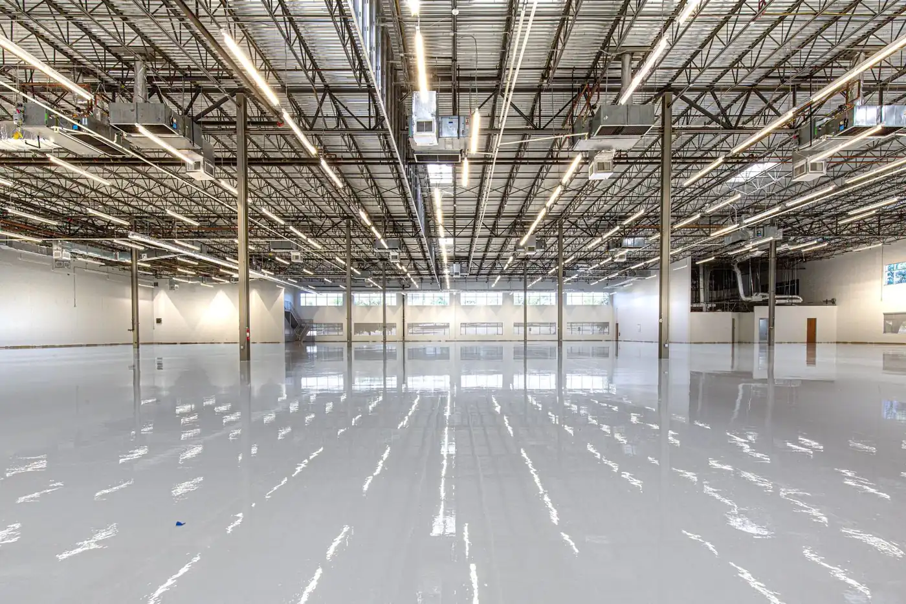

Hand-poured pigment in clear resin — a seamless, one-of-a-kind floor for garages, gyms and showrooms.
Call Now for a Free EstimateTell us about the floor and we’ll get back to you the same working day.
Prefer to talk? Call (209) 444-2506

Metallic epoxy flooring in Stockton is a decorative resin system where pigment is suspended in clear epoxy and moved by hand while the floor is still wet. The result has depth and drift — something closer to polished stone than painted concrete. Home gyms, showrooms, salons and front-facing retail floors are where it earns its price.
Prep is identical to any other coating: diamond grinding to a CSP 1 to 2 profile, crack repair, patches ground flush. The difference starts at the base coat, which on a metallic floor is usually a solid pigmented layer that sets the background tone.
The metallic layer goes on next. Pigment-loaded clear resin gets poured and spread, then worked with rollers, brushes and sometimes a leaf blower to move the pigment into veins and pools. This is the part that cannot be rushed or redone — once it cures, the pattern is permanent.
A clear topcoat seals it. On floors that catch direct sun we use a UV-stable topcoat, because a metallic that ambers loses exactly the color separation you paid for.
Because they are glossy and reflective, and gloss is unforgiving. A flake floor breaks up light across thousands of chips, which is why it forgives a slab that is slightly out of flat. Metallic does the opposite — it acts like a mirror laid on the concrete, so every low spot, trowel ridge and patch edge shows up as a distortion in the reflection.
That is why prep matters more on metallic than on any other finish. Grinding time and flattening work are the two things this floor depends on most. Whoever you hire, ask specifically how much grinding and flattening is planned for your slab.
Metallic floors are quoted after a free on-site estimate, because the labor is skilled and slow and every slab needs a different amount of flattening.
| Factor | Effect on your quote |
|---|---|
| Flatness of the slab | Grinding a floor flat enough for gloss is the biggest part of the job |
| Number of pigments | Two- and three-color pours take longer to work than a single tone |
| Pattern complexity | Tight veining and controlled cells take more hands-on time than a soft drift |
| Topcoat | A UV-stable clear coat is the right call on any sunlit floor |
Flake is the practical choice. The chips add texture, which means better grip when the floor is wet, and they camouflage dirt, tire marks and minor wear. It forgives an imperfect slab and is what we put in most garages.
Metallic is the aesthetic choice. It is seamless, deeper looking, and genuinely one of a kind. It is also smoother underfoot, shows dust more readily, and demands a flatter slab to look right.
A useful test: if the space is mostly storage and parking, flake. If people will be in the room looking at it, metallic. Some homeowners split the difference — metallic in the finished half of the garage, flake where the car sits.
See how this compares against the standard garage floor epoxy system in Stockton.
It depends on the size of the floor, how flat the slab needs to be ground, how many colors you want and the topcoat. The labor is hand-worked and slow, so we measure and inspect the slab at a free on-site estimate and give you a written quote.
It is smoother than a flake floor because there is no texture broadcast into it, and it can be slick when wet. If the floor will see water, we broadcast a fine anti-slip aggregate into the clear topcoat. That keeps the look and adds grip.
You choose the colors, the general style and how much movement you want, and we can show you samples. The precise veining is created by hand while the resin is wet, so no two floors come out identical and none can be repeated exactly. That is the appeal of the finish.
Standard epoxy topcoats can amber under UV, which on a metallic floor means losing the color separation that makes it work. Any floor of ours that catches direct sun through an open door gets a UV-stable topcoat instead, so the colors stay where they started.
We measure the slab, test how it takes water, and hand you a free written estimate before we leave. No obligation.